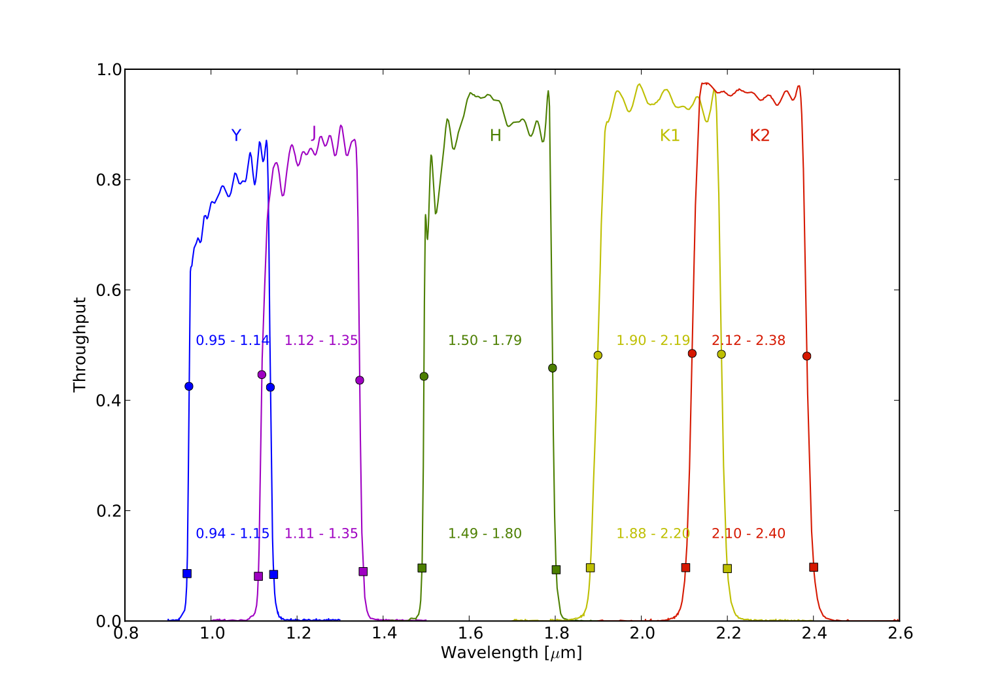
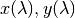
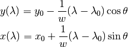

GPI has five wide band filters. Because the spectral resolutions increases toward longer wavelengths, the K band is split into two filters K1 and K2. These filters overlap for the 2.12-2.19 micron range. There is also a small overlap between Y and J for 1.12-1.14 microns.
| Filter | Min Wavelength | Center Wavelength | Max Wavelength | Spectral Resolution |
|---|---|---|---|---|
| Y | 0.95 | 1.05 | 1.14 | 33-38 |
| J | 1.12 | 1.24 | 1.35 | 30-37 |
| H | 1.50 | 1.65 | 1.79 | 39-51 |
| K1 | 1.90 | 2.05 | 2.19 | 61-80 |
| K2 | 2.12 | 2.26 | 2.38 | 63-81 |
The above table gives the 50% cut-on and cut-off wavelengths. The 10% cut-on and cut-off wavelengths are typically an additional 0.01 microns on either side. Spectral resolutions are stated for the delta wavelength that is Nyquist sampled by 2 detector pixels. The resolution varies across the field of view due to interactions between the dispersing prism and the chromatic behavior of the refractive collimator and camera optics in the IFS.
Filter transmission profiles are distributed as part of the GPI data pipeline, in files in the $GPI_DRP_DIR/pipeline/config/filters subdirectory. These are vendor-provided cryogenic tests made on witness samples with identical substrate and coating produced along side the GPI IFS filters.
The wavelength dispersion axis is in the Y direction in GPI raw 2D data files. Longer wavelengths are toward the bottom.
(Physically the optical plane of dispersion within the IFS is horizontal when the instrument is level on the ground, but the X and Y axes are set by detector fast and slow readout axes rather than being referenced to any given notion of ‘horizontal’ or ‘vertical’).
For a given lenslet, the pixel positions as a function of wavelength  are given as follows:

where, from a measured wavelength solution calibration as produced by the data
pipeline,  are the starting positions of that lenslet at the
reference wavelength
are the starting positions of that lenslet at the
reference wavelength  , the spectral dispersion is
, the spectral dispersion is  microns per pixel, and the spectral tilt with respect to the Y axis is
microns per pixel, and the spectral tilt with respect to the Y axis is
 radians.
radians.
The spectral dispersion is very roughly 0.017 microns/pixel.
However, spectral resolution varies both across wavelengths (due to the spectral dispersion of the prism materials) and across the
field of view (due to the spectral dispersion of the reimaging optics lens materials, which creates a small radial distortion which
vector sums or subtracts with the prism dispersion depending on location on the detector). Spectral resolutions are highest near
the ‘top’ of the detector (i.e. maximum Y axis coordinates in the detector frame).
Warning
TODO update here with better information of dispersion vs filter band. It’s not exactly constant.
{kind=link}